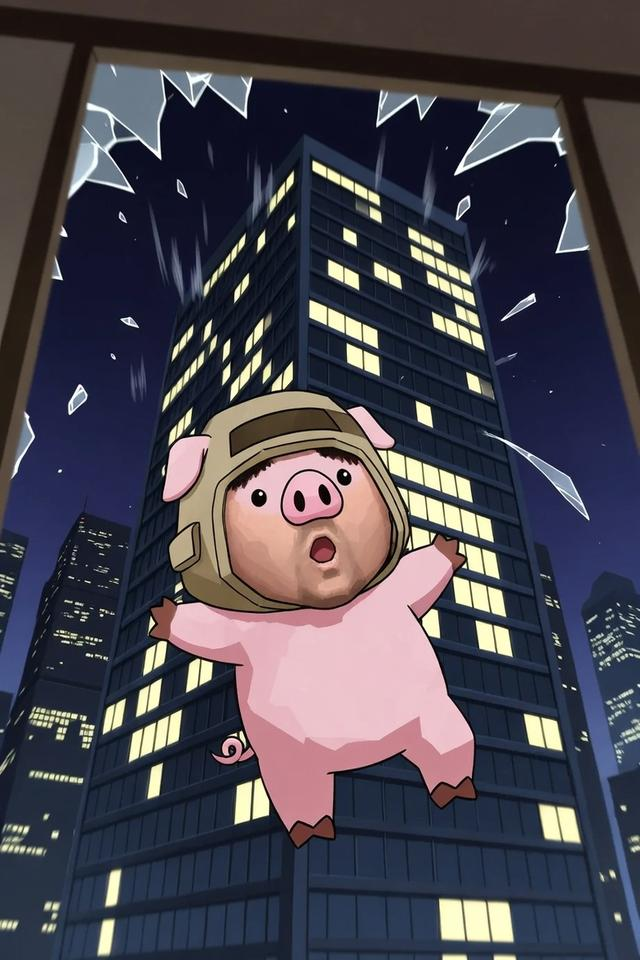
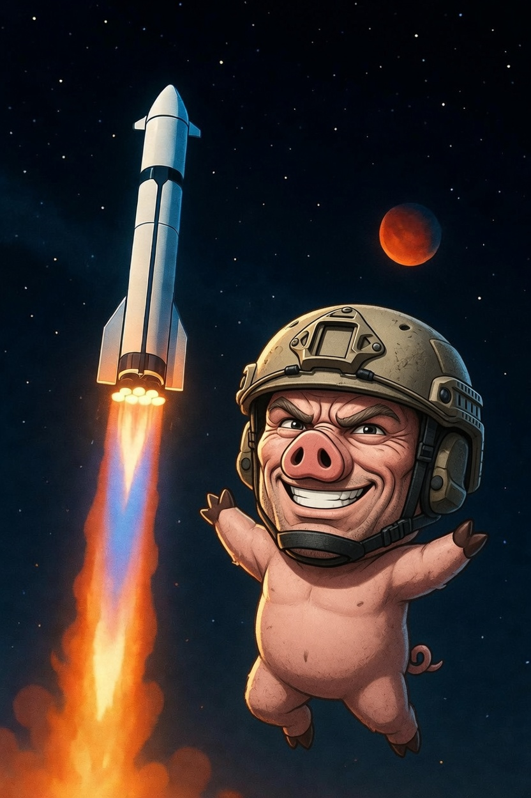

These are the full-screen cinematic end screens compiled into the game
(not the later 3D Starbase boarding cutscene). Art files:
pig-escape.jpg (window jump death) and
pig-mars.jpg (Starbase Mars victory).
Triggered when you jump out an office window (deathKind = escape). Full-bleed freefall art + green title + “Enjoy the night off.”

End of Starbase after boarding the second rocket (marsVictory). Same layout as window escape; art is pig-mars.jpg.

Also still in-game: plain “WEEKEND RUINED” (CEO phrase hit) and “REST & RECHARGE” (sleep) — text-only overlays, no hero art.